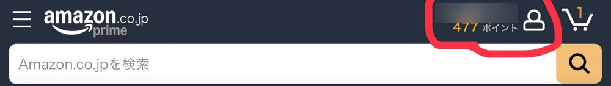
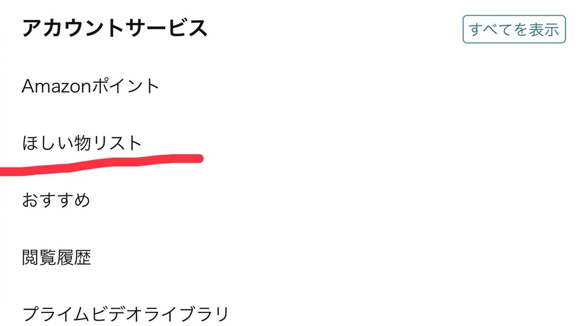
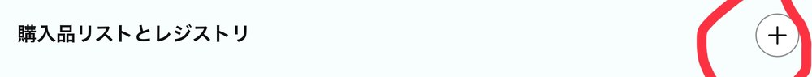
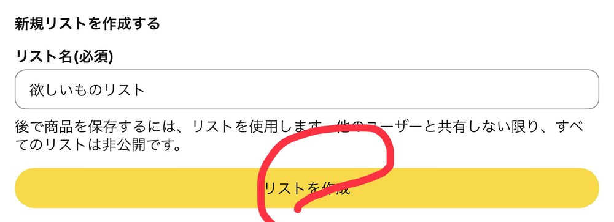
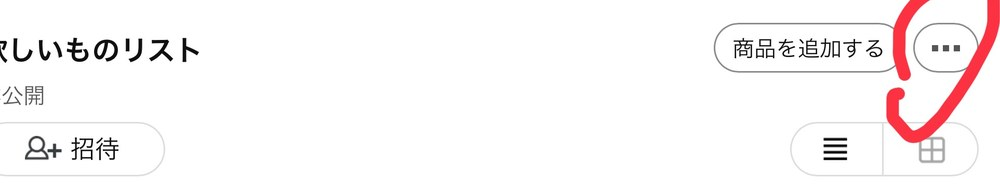
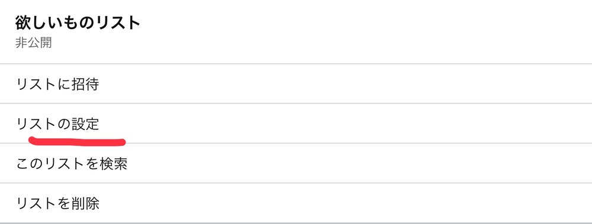
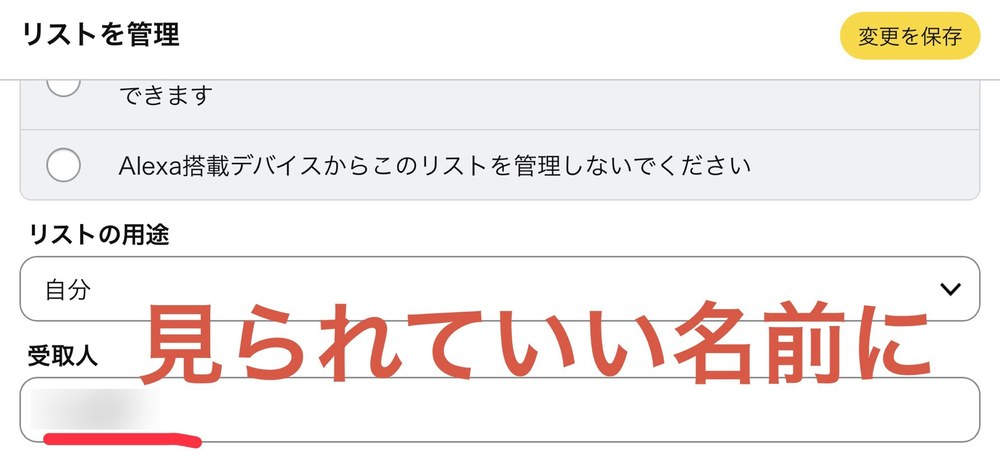
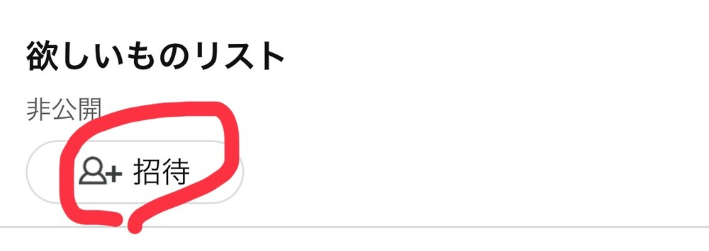
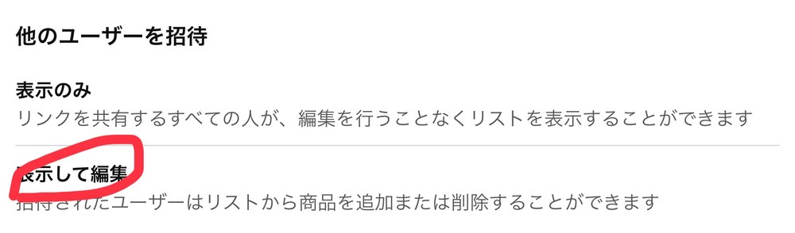

Amazonほしい物リストの作成と招待リンクの共有手順
スマホのブラウザでAmazonを開き、ほしい物リストを新しく作って、一緒に編集できる招待リンクを送るまでの手順です。所要時間は2〜3分です。
まずAmazonのトップを開き、ログインした状態で手順1から進めてください。
Amazonを開く すでにあるリストを見たいときはほしい物リストのページから。こちらは既定のリストが開くので、新しく作る場合は手順1からどうぞ。手順
-
右上のアカウント名をタップ
Amazonトップの右上にある「○○さん」と人型アイコンの部分をタップします。

-
「ほしい物リスト」を選ぶ
開いたメニューの「アカウントサービス」にある「ほしい物リスト」をタップします。

-
右上の「＋」をタップ
「購入品リストとレジストリ」の見出しの右にある丸い「＋」ボタンをタップします。

-
リスト名を入れて「リストを作成」
リスト名を入力し、黄色の「リストを作成」ボタンをタップします。名前は後から変更できます。

-
リスト右上の「…」をタップ
作成したリストが開きます。招待の前に名前の設定を変えるので、右上の「…」ボタンをタップします。

-
「リストの設定」を選ぶ
開いたメニューから「リストの設定」をタップします。

-
「受取人」を見られていい名前に変える
大事な手順です。「受取人」には最初、Amazonに登録した本名が入っています。この名前はリストを開いた相手に見えるので、ニックネームなど見られていい名前に書き換え、右上の「変更を保存」をタップします。

-
「招待」をタップ
リストの画面に戻り、リスト名の下にある「招待」ボタンをタップします。

-
「表示して編集」を選ぶ
「他のユーザーを招待」の画面で「表示して編集」をタップします。相手にも商品を追加・削除してもらえるリンクになります。

-
リンクをコピーして送る
表示された招待リンクをコピーし、LINEやメールで相手に送れば完了です。
補足
| 招待の種類 | 相手ができること |
|---|---|
| 表示のみ | リストを見るだけ。編集はできない |
| 表示して編集 | リストに商品を追加・削除できる |
- リストは作成した時点では非公開です。リンクを送った相手だけが開けます。
- リンクを知っている人は誰でも開けるので、送る相手は絞ってください。
- 画面はスマホのブラウザ版です。Amazonアプリではボタンの位置が少し違うことがあります。